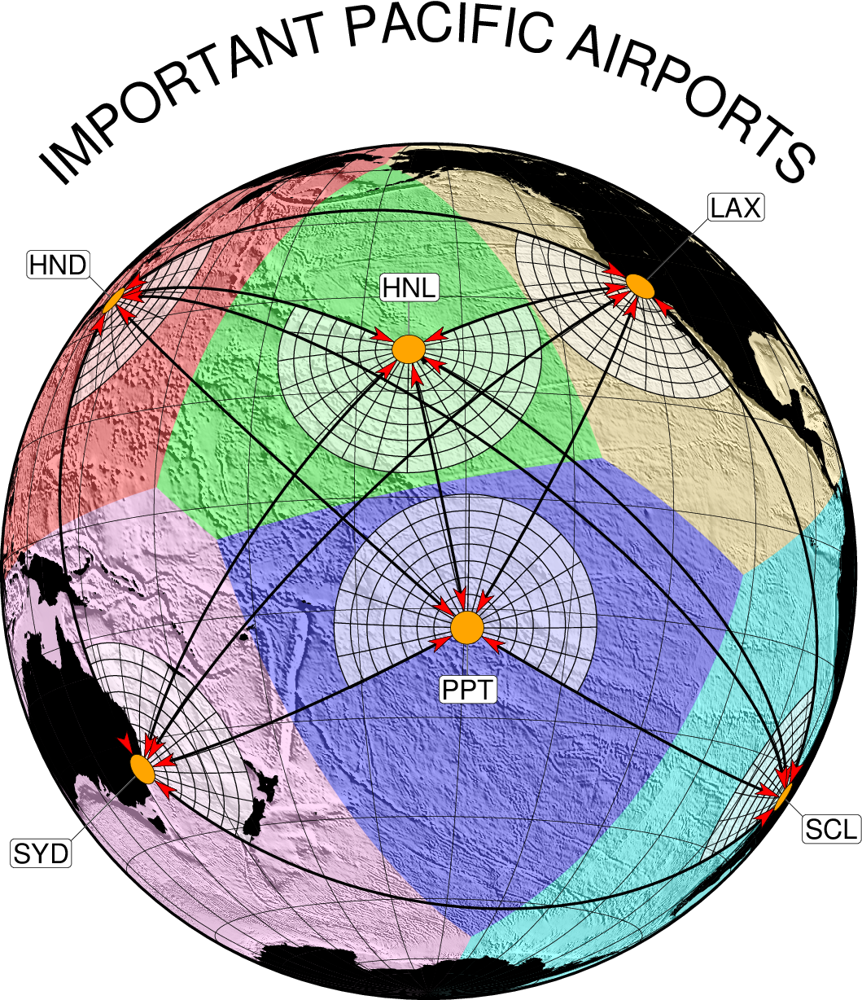

(48) Line networks, map embellishments, and curved titles¶
In this example we show how the module psxy can be used to create a network of lines based on a file with just the nodes (the siz airports). We also demonstrate how the lines can be shortened by (a) a given measure (here 250 km) and then (b) the length of the added vector heads. The airspace closest to each airport is identified as spherical Voronoi cells by sphtriangulate and filled with transparent coloring, allowing us to see the seafloor texture beneath. Finally, we add six local spiderweb azimuth/distance gridlines and set a curved plot title.
#!/bin/bash
# GMT EXAMPLE 48
# $Id$
#
# Purpose: Illustrate use of trimmed lines with vectors, networks, and local spiderwebs
# GMT modules: makecpt, pscoast, psxy, sphtriangulate, grdimate, gmtmath, pstext
#
ps=example_48.ps
cat << EOF > airports.txt
157.8583W 21.3069N 61 300 HNL BC 0.6i
149.5585W 17.5516S -120 120 PPT TC 0.6i
139.6917E 35.6895N 56 170 HND RB 0.3i
70.6693W 33.4489S 215 322 SCL TL 0.25i
151.2070E 33.8675S -10 145 SYD TR 0.85i
118.2437W 34.0522N 142 306 LAX BL 0.80i
EOF
gmt makecpt -Ccategorical -T0/6/1 -N > t.cpt
gmt makecpt -Clightgray -T-12000,12000 -N > g.cpt
gmt sphtriangulate airports.txt -Qv > near_area.txt
gmt grdimage etopo10m.nc -I+a45+nt2 -Cg.cpt -Rg -JG205/-10/7i -P -K -Xc > $ps
gmt psxy -R -J -O -K near_area.txt -L -Ct.cpt -t65 >> $ps
gmt psxy -R -J -O -K -SW2000k -Gwhite@40 airports.txt >> $ps
gmt pscoast -R -J -Gblack -A500 -O -K -Bafg >> $ps
# Make a 15 degrees by 250 km spiderweb grid around each airport
# First to the arcs of different radii
gmt math -T500/2000/250 -o0 T = tmp
while read radius; do
gmt psxy -R -J -O -K -SW${radius}k+a -W0.5p airports.txt >> $ps
done < tmp
# Then do every 15 degree radial lines but in multiples of 15. Also place labels.
daz=15
while read lon lat az1 az2 label just off; do
az1=`gmt math -Q $az1 $daz DIV CEIL $daz MUL =`
az2=`gmt math -Q $az2 $daz DIV FLOOR $daz MUL =`
gmt math -T${az1}/${az2}/$daz -N4/2 -fg -C0 0 $lon ADD -C1 $lat ADD -C3 2000 ADD = | gmt psxy -R -J -O -K -S=0.1 -W0.5p >> $ps
echo $lon $lat $label | gmt pstext -R -J -O -K -DJ${off}+v0.5p,white -F+f16p+j${just} -N >> $ps
echo $lon $lat $label | gmt pstext -R -J -O -K -DJ${off}+v0.25p -F+f16p+j${just} -N -Gwhite -W0.25p -TO >> $ps
done < airports.txt
# Plot trimmed lines and overlay airport locations
gmt psxy airports.txt -R -J -O -K -Fn -W1.5p+o250k+v0.2i+gred+h0.5 >> $ps
gmt psxy airports.txt -R -J -O -K -SE-500 -Gorange -W0.25p >> $ps
# Make an arc of radius 4.5 inches from 45 to 135 degrees around map center and use it to place text
gmt math -T45/135/1 T -C0 COSD -C1 SIND -Ca 4.5 MUL = path.txt
# Move up 3.5 inches so origin is at the map center
gmt psxy -R-3.5/3.5/0/6 -Jx1i -O -Y3.5i path.txt -Sqn1:+l"IMPORTANT PACIFIC AIRPORTS"+v+f32p -Wfaint,white -N >> $ps
rm -f airports.txt g.cpt t.cpt near_area.txt path.txt tmp

{kind=link}
Line networks, map embellishments, and curved titles.